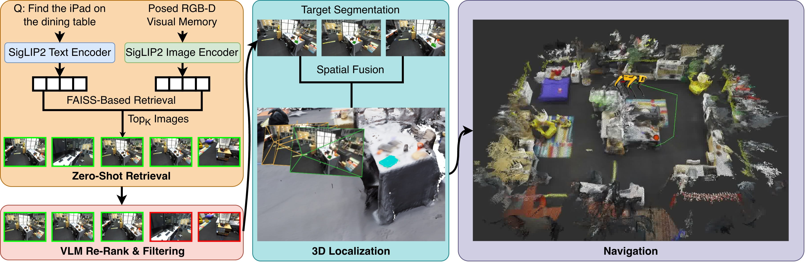

Select a scene and text query below to explore interactive 3D localization results.
Select a scene and text query below to explore interactive 3D localization results.
TL;DR: We skip building 3D maps entirely — instead, we store only posed RGB-D keyframes and use fast embedding retrieval + VLM re-ranking to locate objects on-demand in 3D via depth backprojection, achieving state-of-the-art object-goal navigation with 100× faster scene indexing and far less storage than reconstruction-based methods.
Target localization is a prerequisite for embodied tasks such as navigation and manipulation. Conventional approaches rely on constructing explicit 3D scene representations to enable target localization, such as point clouds, voxel grids, or scene graphs. While effective, these pipelines incur substantial mapping time, storage overhead, and scalability limitations. Recent advances in vision-language models suggest that rich semantic reasoning can be performed directly on 2D observations, raising a fundamental question: is a complete 3D scene reconstruction necessary for object localization?
In this work, we revisit object localization and propose a map-free pipeline that stores only posed RGB-D keyframes as a lightweight visual memory — without constructing any global 3D representation of the scene. At query time, our method retrieves candidate views, re-ranks them with a vision-language model, and constructs a sparse, on-demand 3D estimate of the queried target through depth backprojection and multi-view fusion. Compared to reconstruction-based pipelines, this design drastically reduces preprocessing cost, enabling scene indexing that is over two orders of magnitude faster to build while using substantially less storage. We further validate the localized targets on downstream object-goal navigation tasks. Despite requiring no task-specific training, our approach achieves strong performance across multiple benchmarks, demonstrating that direct reasoning over image-based scene memory can effectively replace dense 3D reconstruction for object-centric robot navigation.

Method overview. Given a query and posed RGB-D keyframes: (1) Retrieval: SigLIP2 embeddings indexed with FAISS retrieve top-K candidates. (2) VLM Re-Rank: a VLM filters false positives (red) and promotes true matches (green). (3) 3D Localization: SAM 3 segments the target; masked depth is backprojected, predictions are grouped into object instances, and per-instance multi-view fusion produces a 3D goal estimate. No global 3D map is built. (4) Navigation: a PointNav policy navigates directly to the goal. (Scene point cloud shown for visualization only.)
@misc{zhou2026memorymaps3dobject,
title={Memory Over Maps: 3D Object Localization Without Reconstruction},
author={Rui Zhou and Xander Yap and Jianwen Cao and Allison Lau and Boyang Sun and Marc Pollefeys},
year={2026},
eprint={2603.20530},
archivePrefix={arXiv},
primaryClass={cs.RO},
url={https://arxiv.org/abs/2603.20530},
}